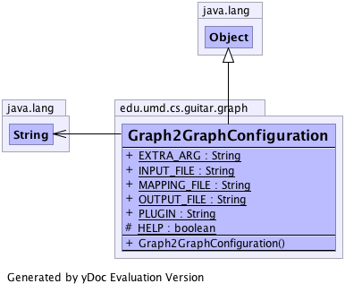

edu.umd.cs.guitar.graph
Class Graph2GraphConfiguration
java.lang.Object
 edu.umd.cs.guitar.graph.Graph2GraphConfiguration
edu.umd.cs.guitar.graph.Graph2GraphConfiguration
public class Graph2GraphConfiguration
- extends java.lang.Object
Class contains the configurations of Graph2Graph Converter
Generated by yDoc Evaluation Version
- Author:
- Bao Nguyen
-
-

| Methods inherited from class java.lang.Object |
clone, equals, finalize, getClass, hashCode, notify, notifyAll, toString, wait, wait, wait |
HELP
protected static boolean HELP
PLUGIN
public static java.lang.String PLUGIN
INPUT_FILE
public static java.lang.String INPUT_FILE
OUTPUT_FILE
public static java.lang.String OUTPUT_FILE
MAPPING_FILE
public static java.lang.String MAPPING_FILE
EXTRA_ARG
public static java.lang.String EXTRA_ARG
Graph2GraphConfiguration
public Graph2GraphConfiguration()